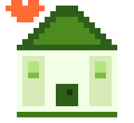
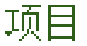

—— 把日子过成一格一格的像素 ——
贰

PROJECTS真正动手做过的东西
动手做过的东西，都在这里。
像素日常
个人博客就是你正在看的这个站点。外面是 2000 年代个人主页的样子，里面是标准博客的骨架 —— 皮是旧的，结构不将就。
- 外面是本地脚本生成的静态页面，里面是云端数据库——页面打开快，内容随时能改
- 文章、照片、留言、评论都在云端；写和改在站长后台，不用重新发布整站
- 留言和评论先登录再发言，署名由账号决定，伪造不了
- 中文像素字是拿宋体二值化放大的，不依赖任何美术素材
Python原生 JSPostgreSQL
※ 把日子过成一格一格的像素 ※※ 把日子过成一格一格的像素 ※※ 把日子过成一格一格的像素 ※※ 把日子过成一格一格的像素 ※※ 把日子过成一格一格的像素 ※※ 把日子过成一格一格的像素 ※※ 把日子过成一格一格的像素 ※※ 把日子过成一格一格的像素 ※※ 把日子过成一格一格的像素 ※※ 把日子过成一格一格的像素 ※
© 2026 像素日常
开站第 23 天 · 文章 — 篇 · 照片 — 张
归档 · 分享给朋友 · 我的账号 · 站长管理
本站地址：https://pixel-daily-blog.app.workbuddy.host/
FASTEST VIEWED AT 800x600


开站第 23 天 · 文章 — 篇 · 照片 — 张
归档 · 分享给朋友 · 我的账号 · 站长管理
本站地址：https://pixel-daily-blog.app.workbuddy.host/
FASTEST VIEWED AT 800x600